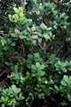
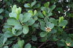
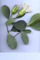
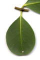
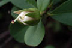
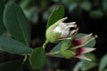
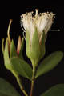
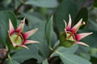
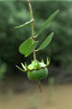
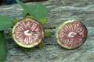
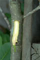
Diagnostic characters
Botany & morphology
Regeneration
Reproductive biology
Ecology
Distribution
Uses
Trees 3 - 15 m high, with pneumatophores. Leaves opposite and mucronate. Flowers white; fruits berry.
Leaves simple, opposite, obovate to ovate, apex broadly rounded and even emarginate, base cuneate, 5 – 12 x 3 – 9 cm, thickly coriaceous; petiole short and thick.
Inflorescence solitary or terminal.
Flowers large, white, 4-6 cm across, bisexual; calyx tube campanulate, more than 6 lobed, green outside and red inside; petals, white with red tinged apex, 13 – 20, resembling like filaments; stamens with white filaments.
Fruits berry, conspicuously oboconical - turbinate, 4-5 cm across apiculate with short style base at center; calyx persistent, 6-7 lobed, reflexed; seeds falcate and smooth.
Pneumatophores emerging upwardly growing from the system of cable roots.
Epigeal or modified epigeal germination. Septifragal capsules split and seeds with corky or spongy testa spread along water current for establishing seedling in the adjoining mud.
Pollination by bats, hawk moths.
Pioneer species, colonizing newly formed sandy mud flats in sheltered situations.
East Africa and Madagascar to Southeast Asia, the Malay Archipelago to the Philippines, and tropical Australia to Micronesia, New Hebrides, and New Caledonia. In India it occurs in Coringa mangrove.
Stem is used for paper pulp, matches, and as poles; leaves as fodder; fruits as vegetable.
Top of the page